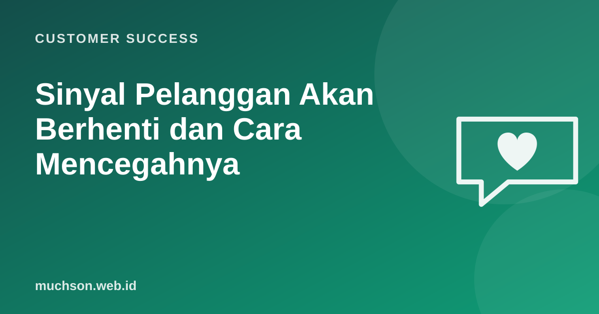

Beranda › Artikel › Customer Success
Customer SuccessSinyal Pelanggan Akan Berhenti dan Cara Mencegahnya
Pelanggan jarang berhenti secara tiba-tiba. Biasanya ada jejak berminggu-minggu sebelumnya: login yang makin jarang, tiket yang tidak terjawab memuaskan, champion yang tidak lagi membalas email. Tim yang belajar membaca jejak ini punya waktu untuk bertindak sebelum terlambat.

Empat kelompok sinyal
Sinyal dan tindakan
| Sinyal | Kemungkinan arti | Tindakan |
|---|---|---|
| Pemakaian fitur inti turun 30-50% dalam sebulan | Kehilangan nilai, pindah alat, atau perubahan tim | Hubungi champion, tawarkan sesi ulang |
| Hanya admin yang login | Pengguna akhir tidak mengadopsi | Pelatihan per peran, panduan singkat |
| Champion keluar dari perusahaan | Hubungan hilang, risiko tinggi | Cari champion baru, perkenalan ulang nilai |
| Tiket kritis yang sama berulang | Frustrasi menumpuk | Eskalasi ke produk, beri kabar perkembangan |
| Meminta ekspor seluruh data | Bisa bersiap pindah | Tanyakan kebutuhannya dengan wajar, cek kepuasan |
| Pembayaran terlambat atau kartu gagal | Masalah anggaran atau teknis | Pengingat ramah, opsi pembayaran lain |
| Tidak hadir di QBR / tidak membalas | Prioritas bergeser | Kontak jalur lain, sponsor eksekutif |
Latihan: baca sinyal
Membangun sistem peringatan dini
- Kumpulkan data akun yang churn 12 bulan terakhir.
- Lihat sinyal apa yang muncul 30-90 hari sebelum mereka berhenti.
- Bandingkan dengan akun yang bertahan untuk memastikan sinyalnya membedakan.
- Pasang peringatan otomatis untuk sinyal terkuat.
- Hubungkan setiap peringatan dengan playbook tindakan.
- Tinjau tiap kuartal: peringatan mana yang sering salah (false alarm)?
Belajar dari yang pergi
Exit interview dengan pelanggan yang sudah berhenti adalah sumber pembelajaran yang sering dilewatkan. Tanyakan dengan rendah hati: kapan Anda mulai mempertimbangkan berhenti, dan apa yang bisa kami lakukan berbeda?
Tanya jawab
Apakah semua churn bisa dicegah?
Tidak. Perusahaan pelanggan bisa bangkrut, diakuisisi, atau berubah strategi. Fokus pada churn yang bisa dicegah: kurang nilai, onboarding gagal, masalah layanan.
Apakah perlu model machine learning?
Tidak untuk memulai. Aturan sederhana dari beberapa sinyal kuat sering sudah sangat membantu dan mudah dijelaskan.
Bagaimana dengan pelanggan kecil yang banyak?
Gunakan peringatan otomatis dan pesan otomatis yang dipersonalisasi, sementara CSM fokus pada akun bernilai tinggi.
Sumber dan bacaan lanjut
- Gupta et al. (2006): Modeling Customer Lifetime Value, Journal of Service Research
- Customer health score (artikel terkait)
- Playbook customer success (artikel terkait)
- Analisis kohort (artikel terkait)